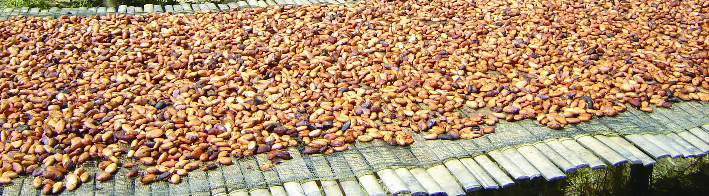
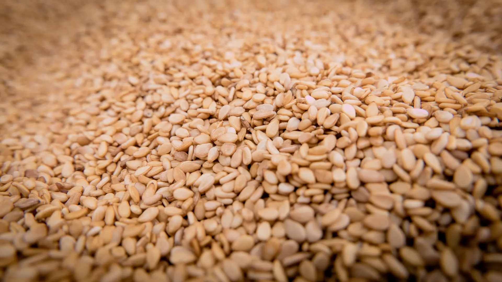
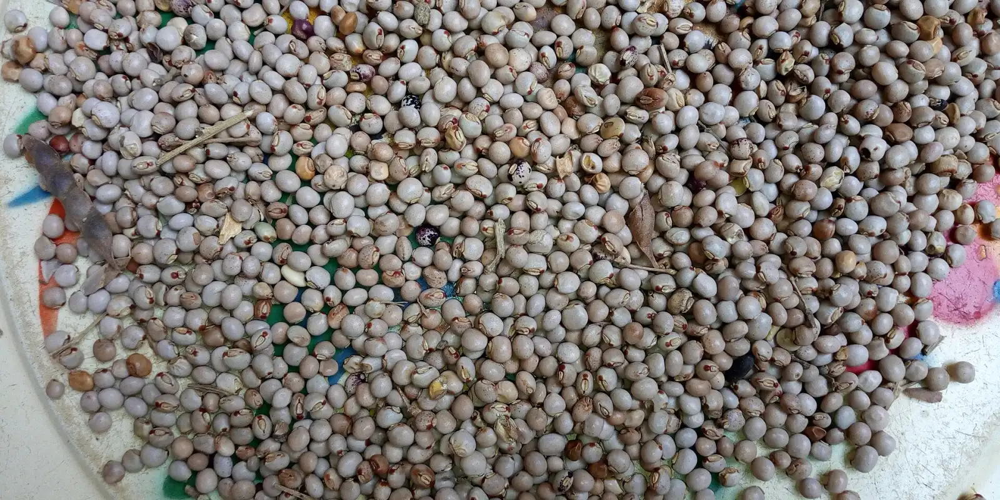
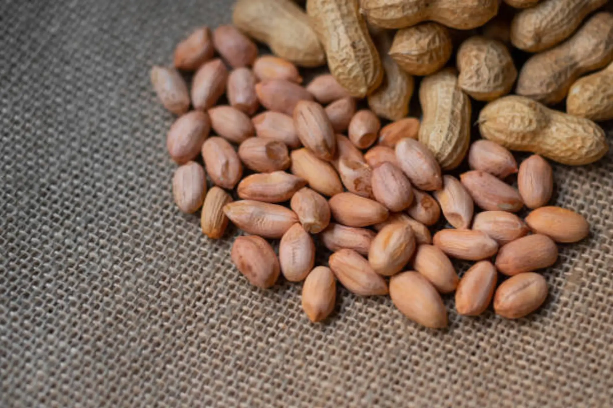
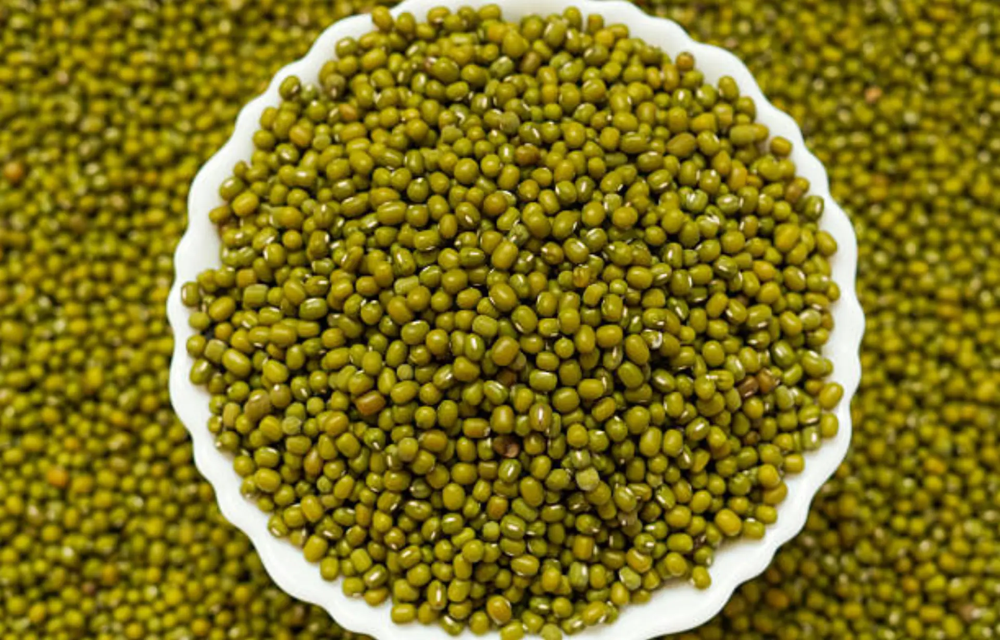

Linda Ushirika,
chagua uadilifu
Chama Kikuu cha Ushirika cha masoko ya mazao ya kilimo Tunduru tangu 1994. Tunauza korosho, ufuta, mbaazi na mazao mengine ya wakulima kupitia minada ya wazi.
Mtiririko wa Msimu
Kuhusu Sisi
Sauti ya wakulima wa Tunduru
TAMCU LTD kilianzishwa tarehe 14.03.1994 chini ya Sheria ya Vyama vya Ushirika (Sura ya 211, toleo rekebu la 2023) na kupewa namba ya usajili AFF-RVM-TUN-DC-2023-27.
Tunaunganisha vyama vya msingi 49 kutoka wilaya nane, tunasimamia minada ya mazao, na kuhakikisha mkulima analipwa kwa wakati.
- Minada ya wazi kupitia TMX na mfumo wa stakabadhi za ghala
- Pembejeo za kilimo kwa wakati kwa wanachama
- Ushauri wa masoko na bei kwa wakulima
Ujumbe wa Uongozi
Neno kutoka kwa Meneja Mkuu
Minada
Matokeo ya minada ya karibuni
Mazao Yetu
Mazao tunayoyauza
Tunakusanya, kusimamia na kutafuta masoko ya mazao haya kutoka Tunduru na mikoa jirani.
Korosho
Korosho ghafi za Tunduru zinauzwa kupitia minada ya ushirika kwa ubora unaotambulika kimataifa.
Ufuta
Ufuta wenye rangi na mafuta yanayovutia masoko ya Asia na Ulaya.
Mbaazi
Mbaazi nzima zilizokaushwa, chanzo cha protini na kipato kwa kaya za Tunduru.
Karanga
Karanga zenye mafuta mengi kwa viwanda vya mafuta na soko la ndani.
Kila siku
Taarifa za kila siku
Picha na taarifa fupi za matukio ya chama.
Habari na Matukio
Taarifa mpya
Huduma Zetu
Huduma kwa wanachama
Wadau Wetu
Tunashirikiana na
Jiunge na ushirika
Una swali kuhusu uanachama, minada au huduma zetu? Tuandikie au tupigie simu.